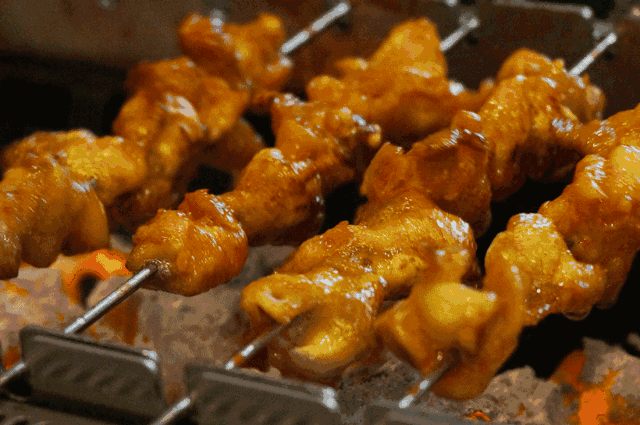
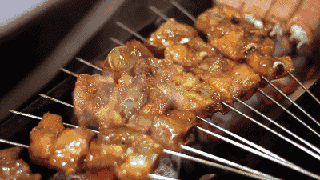

今年春天，淄博烧烤 爆火，一个月上的热搜比过去一年都多；淄博高铁站比春运还忙，当地烧烤店门前更是人山人海。淄博烧烤的爆火
，可能在很多人意料之外，但中国人对于烧烤的热情，却从未冷却。谁能拒绝吃一顿 ¥1888 ¥188的烧烤呢？
烧烤的出现，大概比智人还要早。它就一个条件—— 火 。老祖宗们给动物褪了毛，往坑里一扔，点上火，就能美美地吃顿烤肉了。 学会 用火，改变了人类的命运。熟食让人类避开了寄生虫，减少了牙齿的磨损。延长寿命，知识和智慧才有条件获得传承。可以说，烧烤不 仅在烹饪史上的地位重要，对人类进化和文明发展也影响深远。 当烧烤让人类的文明之树开花结果之后，人类就开始了对烧烤的改造。
每种食材都有自己的味道， 而不同的烹饪方式，又会产生不同的口感和味道 。尤其烧烤，在明火上直接烹饪，食材不仅能吸收厨具传 递的热量，还能直接和火焰接触。两种加热方式，使烹饪温度的范围大大拓宽。 不同的温度使得食材产生了不同风味和香气的新物质， 混合在一起，就是烧烤诱人的香气。 云南火塘烧烤。直接把食材放在明火上方，表面温度可以达到260℃—370℃，远离明火，就会降 到95℃—150℃ 在烧烤的过程中，肉类表面水分迅速干燥，进而使蛋白质和糖类受热，发生美拉德反应。食物表面变成褐色，不同的氨 基酸和糖生成不同气味的物质，使食物有了可口的风味和诱人的色泽。 蔬菜在烧烤过程中，大量水分迅速蒸发，高温促进焦糖化反应， 将碳水化合物和糖转化为较小的化合物，如麦芽酚(具有烤面包味)和呋喃（尝起来像坚果类，带肉味）。
责任编辑： 黑马程序